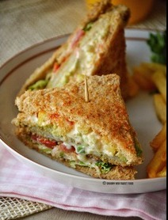

Zeeshan's Chicken Club Sandwhich Recipe
Ingredients :
- 3 slices of bread (of your choice)
- 100 grams of boneless chicken (sliced)
- Chopped lettuce
- 2-3 slices of tomato
- 4-5 slices of cucumber
- Mayonoise
- Salt, pepper and vinegar/lemon juice (seasoning)
Instructions :
- In a bowl, add chicken then add salt, pepper and vinegar or lemon juice to the chicken and mix it up.
- Heat up a pan, add oil and cook your chicken until done.
- For the sauce, in a tiny bowl, add mayonoise , a pinch of salt, black pepper and lil bit of vinegar/lemon juice.
- Take a slice of bread, put some sauce and spread and put lettuce on it.
- Take half of your cooked chicken and put on it then place other slice of bread on top followed by some more sauce spread on it.
- Then put slices of tomato and cucumbers on it and on top of that add the remaining chicken.
- Now place the last slice of bread on top.
- On a pan , toast the sandwhich on each side until a nice golden brown color comes.
- Take it off the heat and Ta-Da! Your delicious and scrumptious chicken club sandwhich is ready to serve.
A Delicious and Scrumptious Sandwhich Made Just For You!

If You Have Found This Recipe To Your Liking , Be Sure To Check Out Our Other Delightful Recipes.